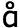
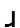
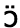

デンマーク語には，母音や子音の発音でも確認したように，発音そのものが難しいということの他に，文字（綴り）と発音の関係を把握することも非常に難しいということがあります．そのため，デンマーク語は文字（綴り）から発音を推測することがなかなか難しい言語でもあるのです． ここでは，アルファベット順に，文字（綴り）に対応する発音，そしてその例語を見ていくことにしましょう． ある文字（綴り）に対して，複数の音が対応する場合があることや，文字（綴り）としては見えていても実際には発音しない文字（綴り）があることなどを確認してください． 黒色太字で示されている文字は，それが母音字または子音字であることを表しています．赤色太字は，例語中の該当する文字を表します．
| 文字 | 発音 | 例語 |
| a | [ȧ:] | Japan ＜日本＞ |
| [a] | han ＜彼＞ | |
| [α] | tak ＜ありがとう＞，rask ＜元気な＞，hav ＜海＞，maj ＜５月＞ | |
| [α:] | radio ＜ラジオ＞ | |
| b | [b] | bank ＜銀行＞ |
| [w] | peber ＜胡椒＞ | |
| c | [s] | citron ＜レモン＞ |
| [k] | creme ＜クリーム＞ | |
| [ʃ] | cello ＜チェロ＞，chef ＜上司＞，social ＜社会の；社交的な＞ | |
| d | [d] | Danmark ＜デンマーク＞，forældre ＜両親＞，indisk ＜インドの＞，færdig ＜出来上がった；準備ができた＞ |
| [ð] | bred ＜幅の広い＞ | |
| 無音 | guld ＜金＞，finde ＜見つける＞，hundrede ＜１００＞，bord ＜机＞ | |
| e | [i] | de ＜彼らは＞ |
| [e] | hedde ＜～と称する＞ | |
| [e:] | leve ＜生きる＞ | |
| [æ] | seks ＜６＞ | |
| [æ:] | sjette ＜６番目＞ | |
| [æ:] / [ȧ:] | ren ＜清潔な＞ | |
| [ä] / [a] | ret ＜権利＞ | |
| [ə] | dække ＜覆う＞ | |
| [α] | lege ＜遊ぶ＞，eje ＜所有している＞ | |
| [ɔ] | lære ＜学ぶ＞，lærer ＜教師＞，yngre ＜より若い＞ | |
| 無音 | vindue ＜窓＞ | |
| f | [f] | bøf ＜ステーキ＞ |
| [w] | aflyse ＜キャンセルする＞ | |
| 無音 | af ＜～から；～の；～によって＞ | |
| g | [g] | god ＜良い＞ |
| 無音 | uge ＜週＞，spørgsmål ＜質問＞，valgte ＜選ぶ（過去形）＞ | |
| [j] / 無音 | dag ＜日＞，vælge ＜選ぶ＞ | |
| [ʃ] | genert ＜恥ずかしがり屋の＞ | |
| [w] | færge ＜フェリー＞ | |
| h | [h] | hus ＜家＞ |
| 無音 | hjem ＜自宅へ＞，hvem ＜誰＞，yoghurt ＜ヨーグルト＞ | |
| i | [i] | gik ＜行く（過去形）＞，tørstig ＜喉が渇いた＞ |
| [i:] | ni ＜９＞ | |
| [i] / [j] | idiot ＜馬鹿者＞ | |
| [e] | finde ＜見つける＞ | |
| [æ] / [ȧ] | frisk ＜新鮮な＞ | |
| [α] | mig ＜私（目的格）＞ | |
| j | [j] | ja ＜はい＞ |
| [ʃ] | journalist ＜ジャーナリスト＞ | |
| [dj] | jazz ＜ジャズ＞ | |
| k | [k] | købe ＜買う＞ |
| [g] | mørk ＜暗い＞ | |
| l | [l] | lidt ＜少し＞ |
| m | [m] | mund ＜口＞ |
| n | [n] | nul ＜ゼロ＞ |
| [ŋ] | sæson ＜時期＞，ung ＜若い＞，bank ＜銀行＞，restaurant ＜レストラン＞ | |
| o | [o] | foto ＜写真＞ |
| [o:] | pose ＜袋＞ | |
| [å] | ost ＜チーズ＞ | |
| [å:] | koge ＜煮る＞，love ＜約束する＞ | |
| [ɔ] / [] | dog ＜しかし＞，lov ＜法律＞ | |
| [ɔ] | sommer ＜夏＞ | |
| p | [p] | pige ＜女の子＞ |
| [b] | op ＜上へ＞ | |
| 無音 | psykologi ＜心理学＞ | |
| q | [k] | quiz ＜クイズ＞ |
| r | [r] | rød ＜赤い＞ |
| [] | papir ＜紙＞，bord ＜机＞，urter ＜ハーブ（複数形）＞，dyr ＜値段が高い＞，færdig ＜出来上がった；準備ができた＞，mørk ＜暗い＞ | |
| 母音と融合 | marts ＜３月＞，hedder ＜～と称する（現在形）＞，flere ＜より多くの＞，videre ＜さらに＞，fire ＜４＞，torv ＜広場＞，være ＜いる；ある＞，større ＜より大きい＞，dårlig ＜悪い＞ | |
| s | [s] | syv ＜７＞ |
| [ʃ] | Sjælland ＜シェラン島＞，sherry ＜シェリー酒＞，pension ＜年金＞ | |
| t | [t] | ti ＜１０＞ |
| [d] | mit ＜私の＞ | |
| [ð] | huset ＜家（単数既知形）＞，lavet ＜作る（過去分詞形）＞ | |
| [ʃ] | station ＜駅＞ | |
| 無音 | det ＜それ／あれ＞ | |
| u | [u] | du ＜あなたは＞ |
| [u:] | juni ＜6月＞ | |
| [o] | hurtig ＜速い＞ | |
| [å] | smuk ＜美しい＞ | |
| [y] | succes ＜成功＞ | |
| v | [v] | vi ＜私たち＞，halve ＜半分の（既知形）＞ |
| [w] | syv ＜７＞ | |
| [w] (/[v]) | brev ＜手紙＞，prøve ＜試す＞ | |
| 無音 | havde ＜持っている（過去形）＞，halv ＜半分の＞ | |
| w | [v] | wienerbrød ＜デニッシュペストリー＞ |
| [v] / [w] | whisky ＜ウィスキー＞ | |
| x | [s] | xylofon ＜シロホン＞ |
| [ks] | taxa ＜タクシー＞ | |
| y | [y] | tysk ＜ドイツの＞，syvtal ＜数字の７＞ |
| [y:] | betyde ＜意味する＞ | |
| [ø] | flytte ＜引っ越す＞ | |
| [ö] | ryg ＜背中＞ | |
| z | [s] | zebra ＜シマウマ＞ |
| æ | [æ] | væk ＜離れて＞ |
| [æ:] | glæde ＜喜ばせる＞ | |
| [æ: / ȧ:] | dræbe ＜殺す＞ | |
| [ä / a] | træk ＜特徴＞ | |
| ø | [ø] | øst ＜東＞，øvrig ＜別の，残りの＞ |
| [ø:] | møde ＜会う＞ | |
| [ö] | køn ＜きれいな＞，støvle ＜長靴＞ | |
| [ö:] | høne ＜雌鶏＞ | |
| [] | grøn ＜緑の＞ | |
| [ɔ] | løg ＜玉ねぎ＞，høj ＜背の高い＞ | |
| å | [å:] | låse ＜鍵をかける＞ |
| [ɔ] / [] | vågne ＜目覚める＞ | |
| [ɔ] | hånd ＜手＞ |